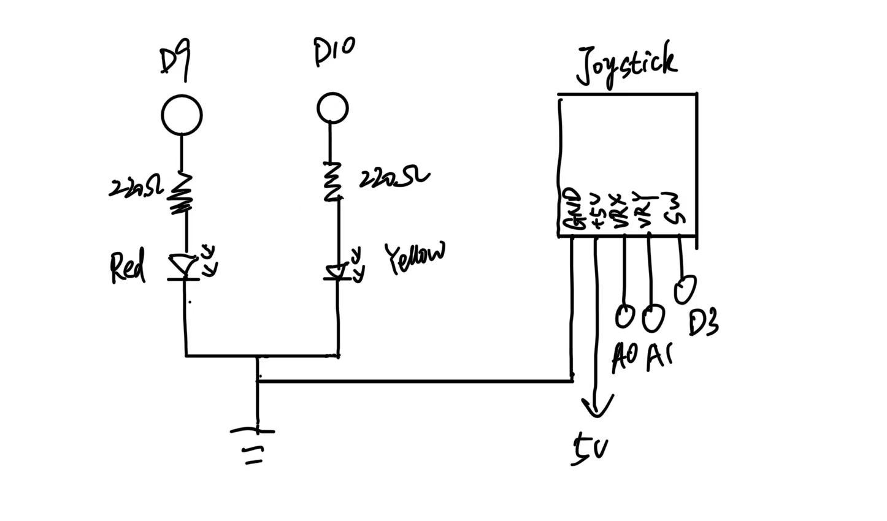
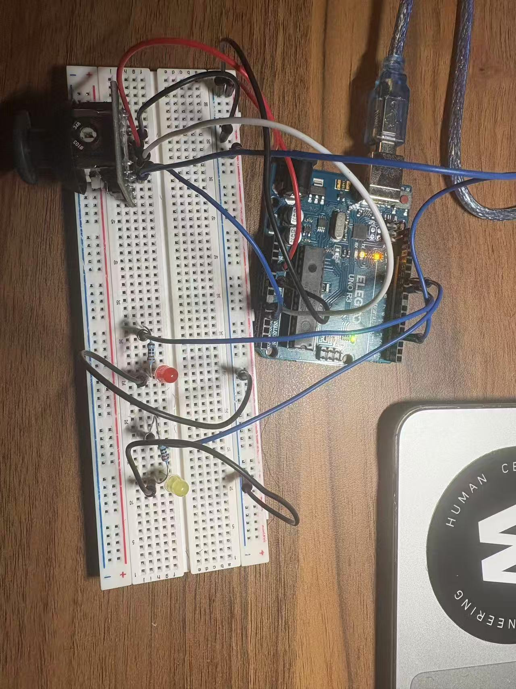
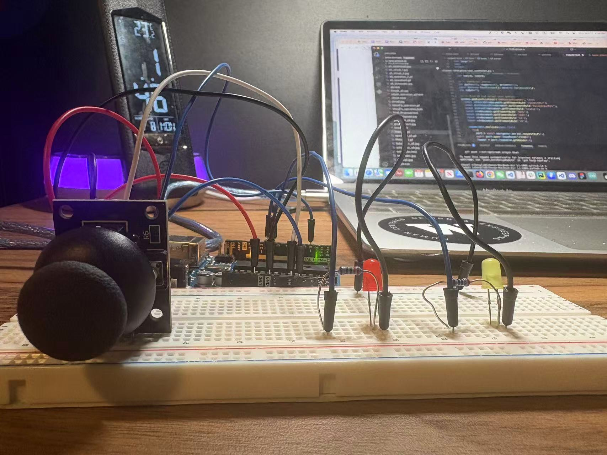
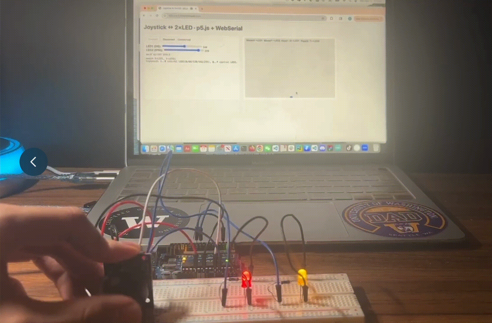
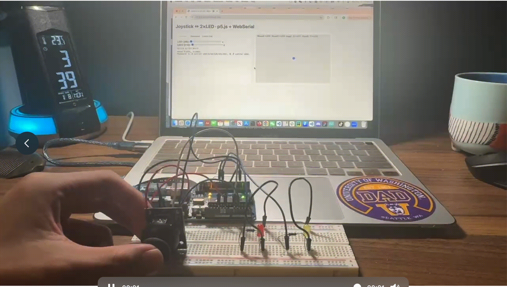

Schematic

Circuit


Circuit Operation




In this project, I used a joystick module as the primary input device. The Arduino sends analog X and Y axis signals from the joystick to the webpage, which are then used to control the movement of a ball on the p5.js canvas. Pressing the joystick's built-in button also triggers a change in the webpage's background color.
In the other direction, the webpage sends keyboard and mouse input back to the Arduino to control the brightness of two LEDs connected to pins D9 and D10. For example, pressing keys 1-5 or Q-T adjusts the brightness level of each LED.
Schematic Explanation:
VCC → 5V: Powers the joystick module. GND → GND: Circuit common ground. VRx → A0: Output analog voltage (representing up/down direction). VRy → A1: Output analog voltage (representing left/right direction) SW → D3: Joystick button (grounded when pressed), read using pinMode(D3, INPUT_PULLUP) in the Arduino program.
Resistor Calculation
So I chose a 220Ω resistor for the red and yellow LEDs.





// The serial port baud rate is consistent with the webpage
#define BAUD 115200
// Joystick and button pins
const int PIN_VRX = A0; // Joystick X
const int PIN_VRY = A1; // Joystick y
// Joystick button (pressed to ground)
const int PIN_SW = 3;
// Two LEDs (PWM)
const int PIN_LED1 = 9; // LED1 → D9
const int PIN_LED2 = 10; // LED2 → D10
// The frequency of sending joystick data (approximately 30Hz)
const unsigned long TX_DT = 33;
unsigned long lastTx = 0;
// Serial port receive line buffer
char lineBuf[40];
int lineLen = 0;
void setup() {
Serial.begin(BAUD); // Open serial port
pinMode(PIN_SW, INPUT_PULLUP); // Enable internal pull-up: Pressed = 0, Not pressed = 1
pinMode(PIN_LED1, OUTPUT); // LED1 output
pinMode(PIN_LED2, OUTPUT); // LED2 output
analogWrite(PIN_LED1, 0); // Initial extinguishing
analogWrite(PIN_LED2, 0); // Initial extinguishing
}
void loop() {
// Reading joysticks and buttons
int ax = analogRead(PIN_VRX); // 0..1023
int ay = analogRead(PIN_VRY); // 0..1023
int btn = digitalRead(PIN_SW); // 1 = Release, 0 = Press
// Send data to the webpage periodically: ax,ay,btn\n
if (millis() - lastTx >= TX_DT) {
lastTx = millis();
Serial.print(ax); Serial.print(',');
Serial.print(ay); Serial.print(',');
Serial.println(btn);
}
// —— Command to read webpage (ends with a newline character \n)
while (Serial.available() > 0) {
char c = (char)Serial.read();
// Received a line
if (c == '\n') {
lineBuf[lineLen] = '\0';
handleLine(lineBuf); // Analysis
lineLen = 0; // Clear
} else if (lineLen < (int)sizeof(lineBuf)-1) {
lineBuf[lineLen++] = c; // Continue collecting
} else {
lineLen = 0; // Excessive Disposal
}
}
}
// Parsing two brightness commands: L1:NNN / L2:NNN
void handleLine(const char* s) {
if (s[0]=='L' && s[2]==':') {
int which = s[1]; // '1' or '2'
int val = atoi(s+3); // Take numerical value
if (val < 0) val = 0; // Limit
if (val > 255) val = 255;
if (which=='1') analogWrite(PIN_LED1, val);
if (which=='2') analogWrite(PIN_LED2, val);
}
}
// Canvas Size
let cw=520, ch=340;
// Joystick data (Arduino → Webpage)
let ax=512, ay=512, btn=1;
// LED current value (webpage → Arduino)
let led1=0, led2=0;
// WebSerial status
let port=null, reader=null, writer=null;
const enc=new TextEncoder(), dec=new TextDecoder();
let rxBuf="";
// Bind UI and serial port button
window.addEventListener('DOMContentLoaded', ()=>{
const connectBtn=document.getElementById('connectBtn');
const disconnectBtn=document.getElementById('disconnectBtn');
const statusEl=document.getElementById('status');
const s1=document.getElementById('led1');
const s2=document.getElementById('led2');
const v1=document.getElementById('v1');
const v2=document.getElementById('v2');
// Check if your browser supports Web Serial.
if (!("serial" in navigator)) {
statusEl.textContent = "Web Serial not supported.";
connectBtn.disabled = true;
disconnectBtn.disabled = true;
return;
}
// Click the "Connect" button to connect the Arduino.
connectBtn.onclick = () => {
if (port) return; // 已连接则忽略
navigator.serial.requestPort().then(p => {
port = p;
return port.open({ baudRate: 115200 });
}).then(() => {
if (port && port.readable && port.writable) {
reader = port.readable.getReader();
writer = port.writable.getWriter();
statusEl.textContent = "Connected";
connectBtn.disabled = true;
disconnectBtn.disabled = false;
readLoop();
sendL1(led1);
sendL2(led2);
}
});
};
// Clicking the "Disconnect" button disconnects the connection.
disconnectBtn.onclick = () => {
if (reader) {
reader.cancel().then(() => { reader.releaseLock(); reader = null; });
}
if (writer) {
writer.releaseLock();
writer = null;
}
if (port) {
port.close().then(() => {
port = null;
connectBtn.disabled = false;
disconnectBtn.disabled = true;
statusEl.textContent = "Not connected";
});
}
};
// Slider change → Send PWM
s1.oninput = () => {
led1 = +s1.value;
v1.textContent = led1;
if (writer) sendL1(led1);
};
s2.oninput = () => {
led2 = +s2.value;
v2.textContent = led2;
if (writer) sendL2(led2);
};
});
// Serial port read loop: Parsing "ax,ay,btn\n"
async function readLoop() {
const tel = document.getElementById("telemetry");
while (reader) {
const r = await reader.read();
if (!r || r.done) break;
if (!r.value) continue;
rxBuf += dec.decode(r.value);
// A line of data is parsed whenever a newline character is encountered.
let i;
while ((i = rxBuf.indexOf("\n")) >= 0) {
const line = rxBuf.slice(0, i).trim();
rxBuf = rxBuf.slice(i + 1);
const p = line.split(",");
if (p.length === 3) {
const pax = parseInt(p[0]);
const pay = parseInt(p[1]);
const pbtn = parseInt(p[2]);
if (!isNaN(pax) && !isNaN(pay) && !isNaN(pbtn)) {
ax = pax; ay = pay; btn = pbtn;
tel.textContent = `ax:${ax} ay:${ay} btn:${btn}`;
}
}
}
}
}
// Send commands to two LEDs
function sendL1(v) {
if (writer) writer.write(enc.encode(`L1:${clamp(v)}\n`));
}
function sendL2(v) {
if (writer) writer.write(enc.encode(`L2:${clamp(v)}\n`));
}
function clamp(v) {
v |= 0;
if (v < 0) v = 0;
if (v > 255) v = 255;
return v;
}
// p5:Canvas and Interaction
function setup() {
const cnv = createCanvas(cw, ch);
cnv.parent("canvas-wrap");
noStroke();
textSize(13);
}
function draw(){
// The background brightens when the button is pressed.
background(btn===0 ? 248 : 235);
// Reference grid
stroke(220);
for(let x=0;x<=cw;x+=40) line(x,0,x,ch);
for(let y=0;y<=ch;y+=40) line(0,y,cw,y);
noStroke();
// Map the joystick (0..1023) to pixels
const px = map(ay,0,1023,0,cw);
const py = map(ax,0,1023,ch,0);
fill(80,140,255);
circle(px,py,18);
fill(0);
text('MouseX→LED1 MouseY→LED2 Keys(1..5)→LED1 Keys(Q..T)→LED2',10,18);
// Move the mouse within the canvas → Two LEDs
if (mouseX >= 0 && mouseX <= cw && mouseY >= 0 && mouseY <= ch && writer) {
const t1 = Math.round(map(mouseX, 0, cw, 0, 255));
const t2 = Math.round(map(mouseY, 0, ch, 0, 255));
if (t1 !== led1) {
led1 = t1;
const s1 = document.getElementById("led1"), v1 = document.getElementById("v1");
s1.value = led1; v1.textContent = led1; sendL1(led1);
}
if (t2 !== led2) {
led2 = t2;
const s2 = document.getElementById("led2"), v2 = document.getElementById("v2");
s2.value = led2; v2.textContent = led2; sendL2(led2);
}
}
}
// Keyboard presets (LED1: 1..5; LED2: Q..T)
function keyPressed() {
if (!writer) return;
const m1 = { "1": 0, "2": 64, "3": 128, "4": 192, "5": 255 };
const m2 = { "q": 0, "w": 64, "e": 128, "r": 192, "t": 255,
"Q": 0, "W": 64, "E": 128, "R": 192, "T": 255 };
if (m1[key] !== undefined) {
led1 = m1[key];
document.getElementById("led1").value = led1;
document.getElementById("v1").textContent = led1;
sendL1(led1);
}
if (m2[key] !== undefined) {
led2 = m2[key];
document.getElementById("led2").value = led2;
document.getElementById("v2").textContent = led2;
sendL2(led2);
}
}